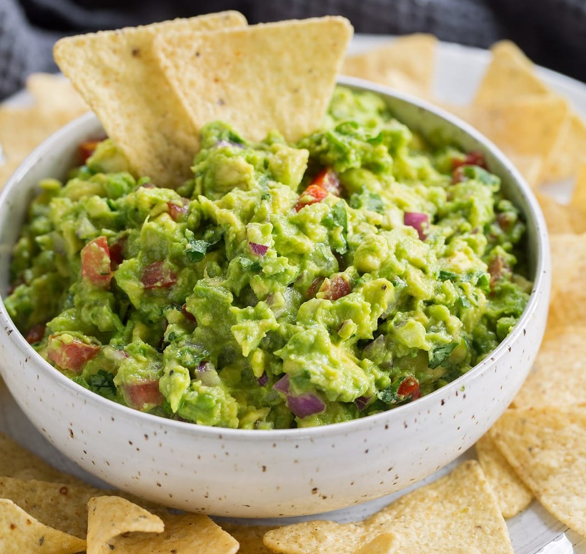

Grocery Prep
Home
About the Chef
Guacamole
A quick and easy snack that is easily portable.

Ingredients
1 avocado, mashed
1/2 tomato, chopped
1/4 onion, chopped
1/2 clove garlic, minced
1/2 lime
1 tbsp salt
Instructions
Combine the mashed avocado, chopped tomato, onion, and minced garlic in a large bowl.
Squeeze and add the lime to the bowl.
Add salt, place in the fridge for half an hour, and enjoy with chips!